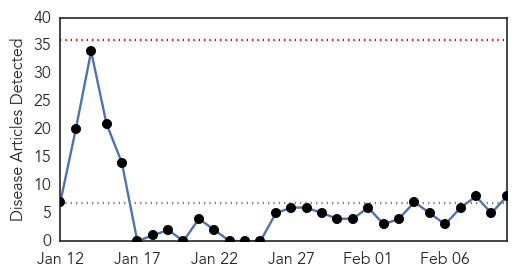
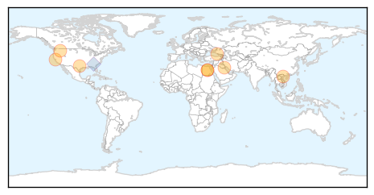

30 Day Trends
Web: 0 alerts, 0 warnings
Twitter: 4 alerts, 0 warnings
Top Articles:
- 1.000
- How the “Flu Blacklist” Explains Why the 2013-2014 Flu Season is Deadly « The Berkeley Blog
- 0.999
- Swine Flu claims Life of 38 People in Egypt
- 0.999
- Cases of H1N1 detected in Malaysia, Singapore, Thailand and Vietnam
- 0.997
- Egypt's Swine Flu Death Toll Reaches 38 — Naharnet
- 0.996
- Fear of swine flu returns in KuwaitHealthcare
- 0.995
- China’s surging bird flu – bring in the veterinarians
- 0.986
- A&M Research on Flu Will Change Government Response to Pandemics
- 0.982
- Young Adults and Obese are Vulnerable to H1N1 Flu
Top Tweets:
- 0.744
- RT: H1N1 flu is especially harsh for pregnant women. The flu shot safely protects these women from flu getafluvax! ad http://t.…
Web/News Articles
Tweets

Article Locations
Article Confidences